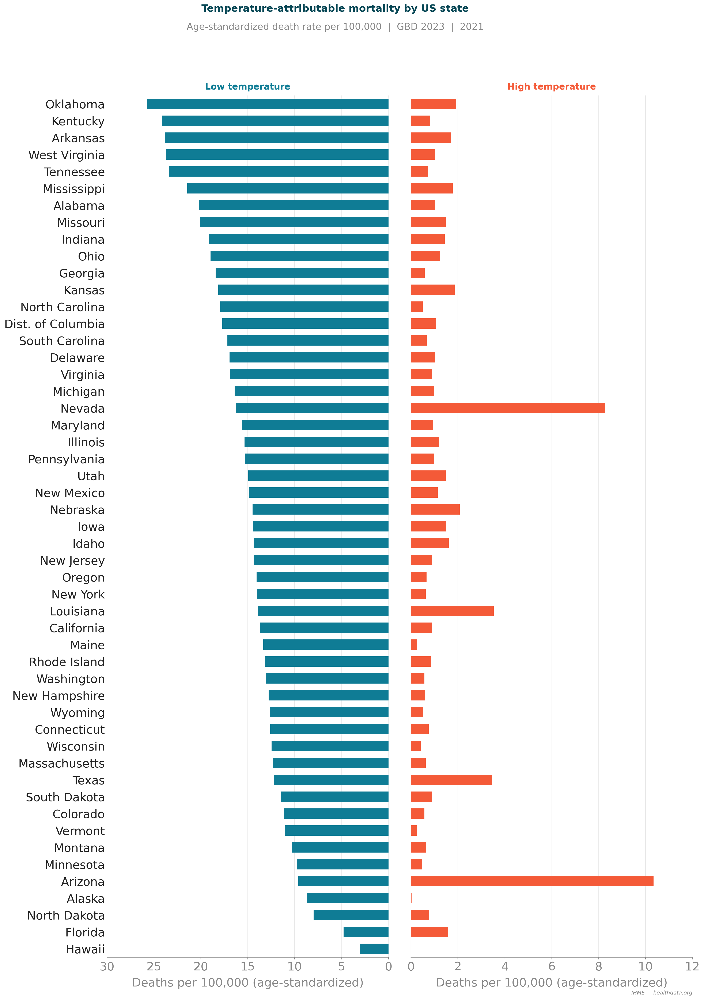
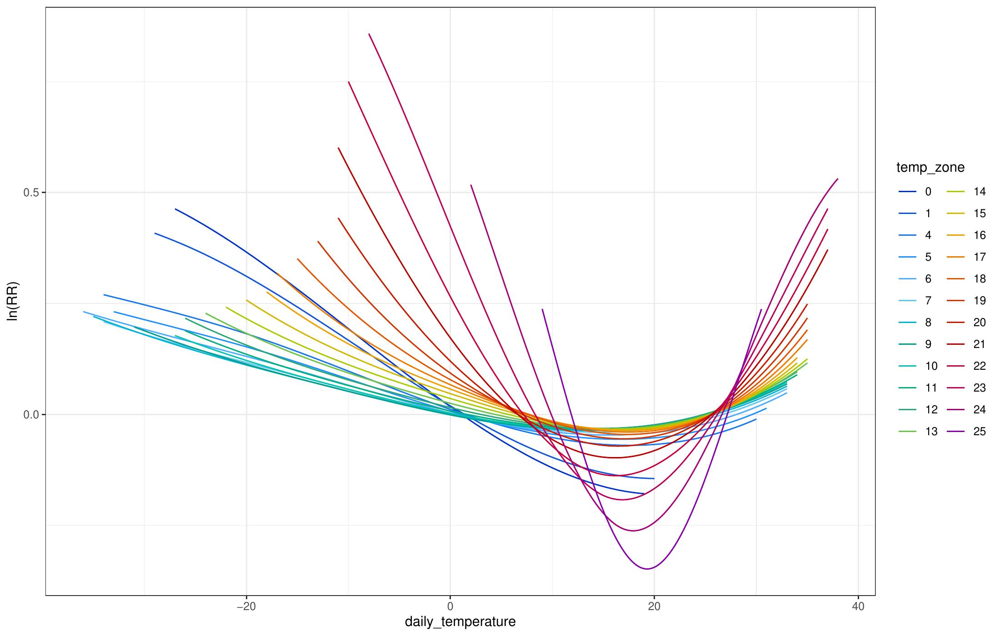
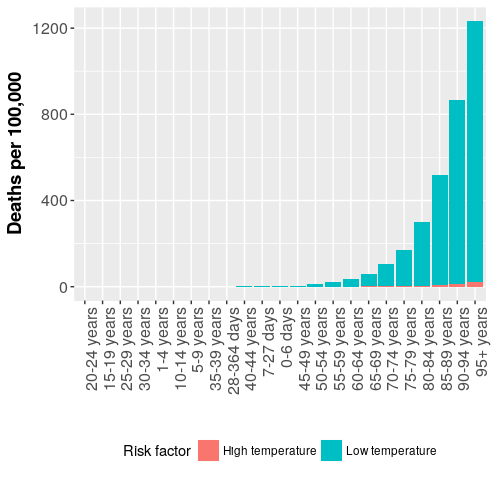

Extreme temperature is now the leading environmental risk factor in North America, and its toll is set to grow. As the U.S. population aged 65 and older is projected to double to 98 million by 2060, and climate change amplifies heat extremes, older adults with multiple chronic conditions — COPD, diabetes, cardiovascular disease — face rapidly escalating risk. Yet no systematic assessment of temperature related mortality, broken down by cause, exists across diseases, ages, and racial and ethnic groups at fine spatial scale: most studies are limited to individual cities, current estimates lack risk functions specific to age, and no comparative assessment of intervention effectiveness by location has been done. As Principal Investigator of a five year, $3.7 million R01 grant from the National Institute on Aging (NIA/NIH), I am leading research to close these gaps.
Preliminary GBD analyses I've led show striking geographic patterns beneath these national numbers: heat impacts are concentrated in Arizona, Texas, and Louisiana, while cold impacts are highest in West Virginia and across the Midwest — with unexpected cold mortality also appearing in Florida and Hawaii, underscoring that risk exists even in mild climates. Much of this variation is currently masked by state level GBD estimates, which obscure large heterogeneity within states.

Current GBD estimates also lack risk functions specific to age, likely underestimating the burden already carried by older adults. My own global projections indicate that heat related deaths may double by the end of the century under high emission scenarios, and that reductions in cold mortality will not be enough to offset those gains — a concerning trajectory as the population most vulnerable to temperature extremes continues to grow.

Study design
The project is guided by three aims. Aim 1 derives risk functions for temperature mortality, both all cause and broken down by specific cause, disaggregated by age, sex, and race/ethnicity, using a hybrid Bayesian meta-regression (MR-BRT) framework applied to spatially explicit U.S. mortality data coded by ICD from 1990 to 2019, paired with high resolution 4×4 km gridded temperature exposure that captures urban heat islands and local micro climate variation. Aim 2 projects these impacts through 2100 by combining Aim 1's risk functions with downscaled climate projections across the IPCC's SSP1 2.6 through SSP5 8.5 emission scenarios and GBD Future Health Scenarios population projections that account for aging, socioeconomic change, and shifting rates of comorbidity. Aim 3 evaluates the risk reduction potential of five interventions — weatherization, residential air conditioning, green roofs and urban vegetation, urban cooling strategies such as reflective surfaces and shade, and municipal heat action plans — producing guidance for policymakers specific to each location and population.

Equity is central to this work: analyses throughout account for how risk varies by age, race and ethnicity, and socioeconomic status, so that structurally vulnerable communities can be identified for priority investment rather than averaged away in national totals. A Policy Advisory Panel — with representatives from AARP, ASTHO, NACCHO, and the San Francisco Department of Public Health — helps ensure the findings translate into actionable guidance for public health agencies, from optimizing the placement of cooling centers to informing municipal heat action plans and long term infrastructure decisions. Results will be shared through peer reviewed publications and an interactive online visualization tool built for scientists, policymakers, and the public alike.
Explore further